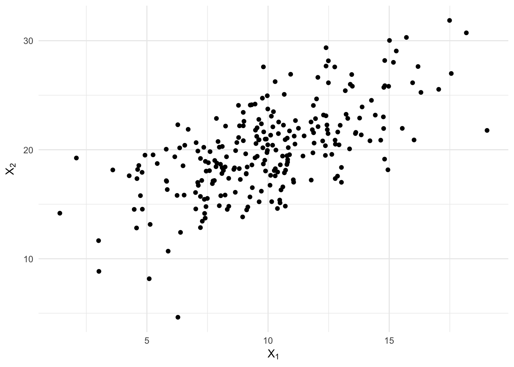
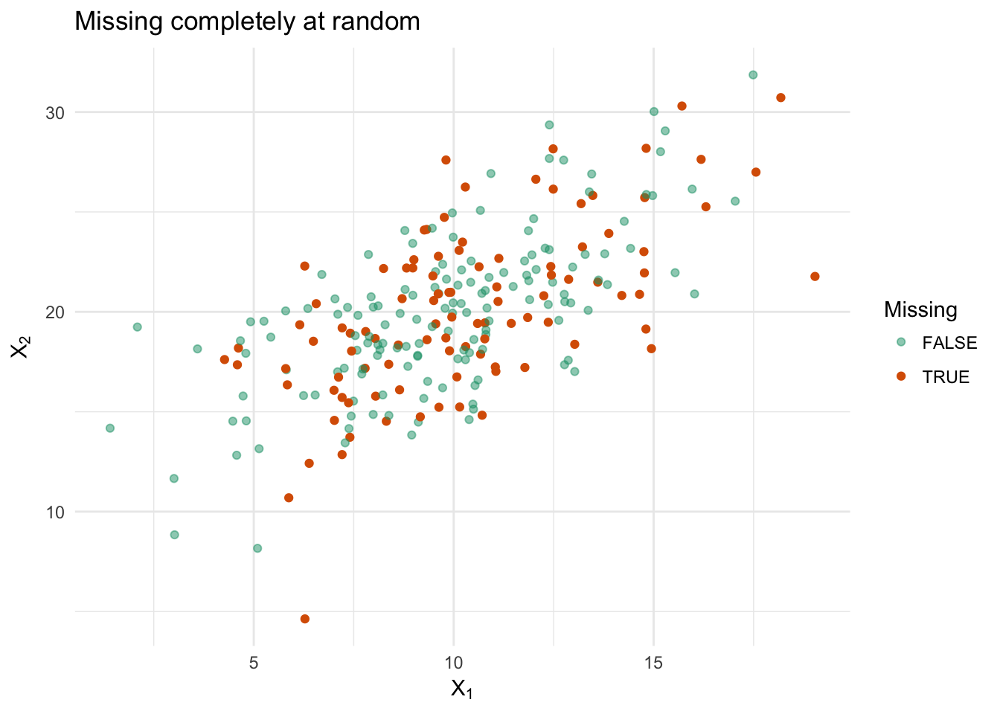
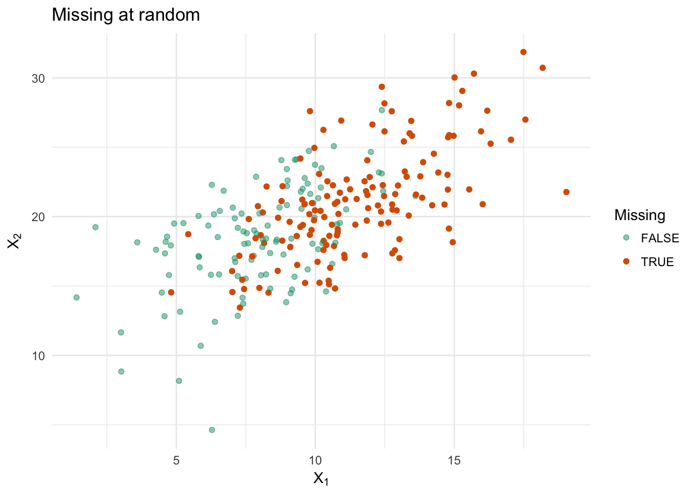
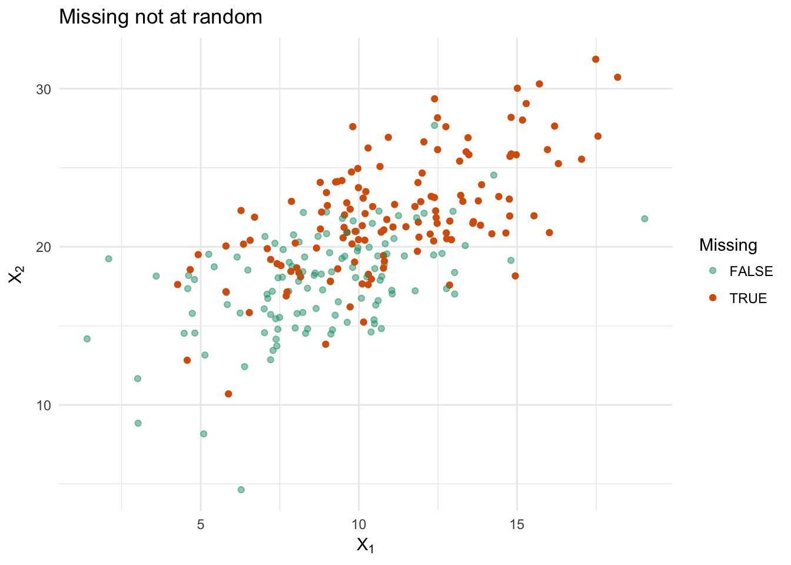
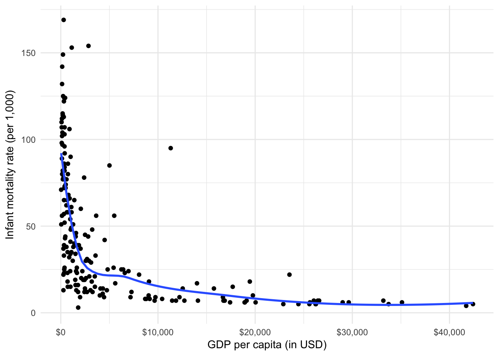
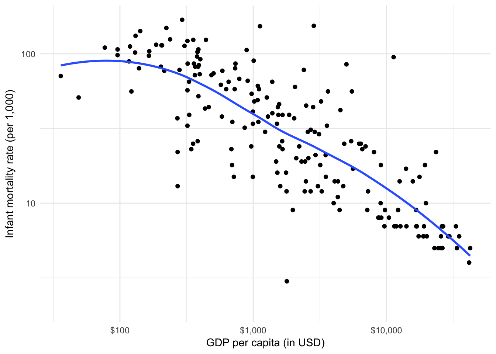
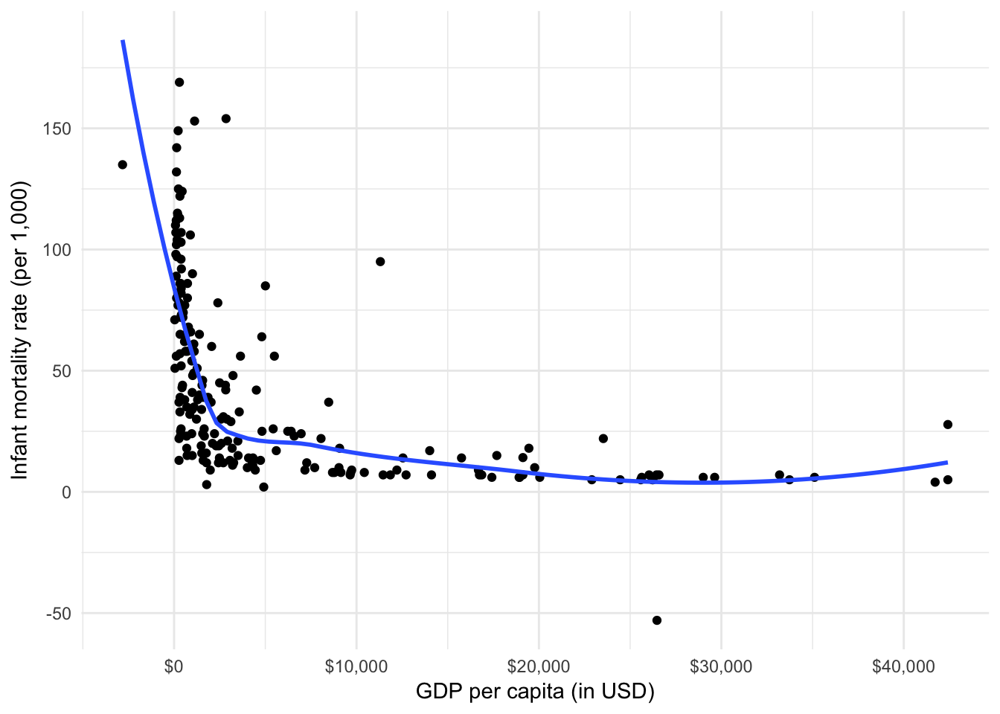

Missing data and multiple imputation
MACS 30200 - Perspectives on Computational Research
Objectives
- Define missing data and patterns of missingness
- Identify traditional approaches to missing data
- Define imputation and multiple imputation
- Summarize maximum-likelihood estimation for MAR data
- Define Bayesian multiple imputation
- Demonstrate how to conduct inference on MI datasets
library(tidyverse)
library(broom)
library(forcats)
library(modelr)
library(stringr)
library(car)
library(rcfss)
library(RColorBrewer)
options(digits = 3)
set.seed(1234)
theme_set(theme_minimal())Missing data
Causes of missingness
- Surveys
- Global or unit non-response - individuals refuse to participate in or answer questions in a survey
- Item non-response - individual may not know the answer to or refuses to answer a specific question on the survey
- Errors in data collection
- Intentionally built into the research design (e.g. survey experiments)
- Censored values
- Data values in the study are censored
- Survival analysis aka duration analysis aka event-history analysis
- Follow individuals for a fixed period of time waiting for an event to happen
- When the event occurs, record the time elapsed
- If the event never occurs, the outcome is censored (i.e. missing)
Patterns of missingness
Missing completely at random (MCAR)
Data are missing completely at random if the missing data can be regarded as a simple ranom sample of the complete data. The probability that a data value is missing is unrelated to the data value itself or any other value, missing or observed, in the data set.
Missing at random (MAR)
Data are missing at random if the missingness is related to the observed data but not the missing data. That is, conditional on the observed data, missingness is as if random. Consider a survey where certain individuals refuse to report their income, and these people differ systematically in income from the sample as a whole.1 However, if the observations are independently sampled so that one respondent’s decision to withhold information about income is independent of other respondents’ decision to withhold information about income, and if conditional on the information that the respondent does provide (e.g. education, occupation, political affiliation) failure to provide information on income is independent of income itself, the the data is MAR.
MCAR is a special case of MAR.
Missing not at random (MNAR)
If missingness is related to the missing values themselves even when the information in the observed data is taken into account, then the missing data is missing not at random. So if conditional on all the observed data, individuals with higher incomes are more likely to withhold information about their incomes, then the missing income data is MNAR.
Why we should care about missingness patterns
If data are MCAR or MAR, then we don’t need to model the process that generates the missing data in order to accomodate the missing data. This means that when data are MCAR or MAR, the mechanism that produces the missing data is ignorable. But when data are MNAR, the mechanism is non-ignorable and it becomes necessary to model this mechanism in order to deal with the missingness in a valid way.
Even more depressingly, you rarely if ever can test to see if your data are MCAR, MAR, or MNAR because the information needed to make that determination is missing.
Simulated examples of missingness patterns
n_sim <- 250 # Number of random samples
# Target parameters for univariate normal distributions
rho <- 2 / 3
mu1 <- 10
mu2 <- 20
s1 <- 9
s2 <- 16
s1s2 <- sqrt(s1) * sqrt(s2) * rho
# Parameters for bivariate normal distribution
mu <- c(mu1, mu2) # Mean
sigma <- matrix(c(s1, s1s2, s1s2, s2), 2) # Covariance matrix
data_sim <- MASS::mvrnorm(n_sim, mu, sigma) %>%
as_tibble %>%
rename(x1 = V1,
x2 = V2)# correlation coefficient
cor(data_sim)## x1 x2
## x1 1.000 0.649
## x2 0.649 1.000# regression models
lm(x2 ~ x1, data = data_sim)##
## Call:
## lm(formula = x2 ~ x1, data = data_sim)
##
## Coefficients:
## (Intercept) x1
## 11.484 0.853lm(x1 ~ x2, data = data_sim)##
## Call:
## lm(formula = x1 ~ x2, data = data_sim)
##
## Coefficients:
## (Intercept) x2
## 0.0948 0.4943# plot of data
ggplot(data_sim, aes(x1, x2)) +
geom_point() +
labs(title = "Complete data",
x = expression(X[1]),
y = expression(X[2]))
What happens to the data under the three mechanisms for generating missing data?
mcar <- data_sim %>%
mutate(na = ifelse(row_number(x2) %in% sample(seq_len(n_sim), 100), TRUE, FALSE))
ggplot(mcar, aes(x1, x2)) +
geom_point(aes(color = na, alpha = na)) +
scale_color_brewer(palette = "Dark2") +
scale_alpha_manual(values = c(.5, 1)) +
labs(title = "Missing completely at random",
x = expression(X[1]),
y = expression(X[2]),
color = "Missing",
alpha = "Missing")
100 observations on \(X_2\) are selected at random and set to missing. Here the missing values of \(X_2\) are MCAR and the subset of valid observations is a simple random sample of the full data set. The regression line with and without the missing values is relatively similar, though slightly different due to the lower sample size needed to calculate the parameter estimates and the standard errors.
mar <- data_sim %>%
mutate(na = .5 + (2 / 3) * (x1 - 10) + rnorm(n_sim, sd = 2),
na = logit2prob(na),
na = as.logical(round(na)))
ggplot(mar, aes(x1, x2)) +
geom_point(aes(color = na, alpha = na)) +
scale_color_brewer(palette = "Dark2") +
scale_alpha_manual(values = c(.5, 1)) +
labs(title = "Missing at random",
x = expression(X[1]),
y = expression(X[2]),
color = "Missing",
alpha = "Missing")
Here an observation’s missingness on \(X_2\) is related to its observed value of \(X_1\) in the logistic regression functional form:
\[\Pr(X_{i2} \text{is missing}) = \frac{1}{1 + \exp[\frac{1}{2} + \frac{2}{3}(X_{i1} - 10)]}\]
As \(X_1\) increases, the probability that \(X_2\) is missing increases. In the resulting dataset, 141 observations are missing. Because \(X_1\) and \(X_2\) are positively correlated, there are relatively fewer small values of \(X_2\) in the observed data versus the complete data. If we only look at observations with valid data on both \(X_1\) and \(X_2\), then this subset of observations also has relatively few small values of \(X_1\). But because \(X_1\) is fully observed, the missing data on \(X_2\) are MAR.
mnar <- data_sim %>%
mutate(na = .5 + (1 / 2) * (x2 - 20) + rnorm(n_sim, sd = 2),
na = logit2prob(na),
na = as.logical(round(na)))
ggplot(mnar, aes(x1, x2)) +
geom_point(aes(color = na, alpha = na)) +
scale_color_brewer(palette = "Dark2") +
scale_alpha_manual(values = c(.5, 1)) +
labs(title = "Missing not at random",
x = expression(X[1]),
y = expression(X[2]),
color = "Missing",
alpha = "Missing")
Finally, here an observation’s missingness on \(X_2\) is related to the (potentially) unobserved value of \(X_2\) itself:
\[\Pr(X_{i2} \text{is missing}) = \frac{1}{1 + \exp[\frac{1}{2} + \frac{1}{2}(X_{i2} - 20)]}\]
As \(X_2\) increases, the probability that \(X_2\) is missing increases. In the resulting dataset, 141 observations are missing. Here too there are relatively few small values of \(X_2\). Because missingness on \(X_2\) depends on the value of \(X_2\), the missing data are MNAR. But again, we only know this because we generated the missingness ourselves; in the real world, you rarely can verify this pattern of missingness.
Traditional approaches to missing data
In deciding how to handle missingness, we should consider three questions:
- Does the method provide consistent estimates of the population parameters?
- Does the method provide valid statistical inferences?
- Does the method use the observed data efficiently or does it recklessly discard information?
Discarding data
Complete-case analysis
Complete-case analysis (or listwise or casewise deletion) is probably the most common approach for handling missing data. In this method, you ignore any observations with missing values on variables necessary to estimate the model.
The advantages of this method are that it:
- Is simple
- Provides consistent estimates and valid inferences when the data is missing completely at random
- Provides consistent estimates of regression coefficients and valid inferences when missingness on all the variables in a regression does not depend on the response variable (even if the data is not MCAR)
The disadvantages of this method are that it:
- Discards valuable information, decreasing efficiency
- Becomes less efficient as missingness occurs in multiple variables. Even if missingness is only 5% for each individual variable, for a dataset with 10 variables we would expect only \(100 \times .95^10 = 60%\) of the observations to be usable
- When data is MAR or MNAR, listwise deletion provides biased results and invalid inferences
Available-case analysis
Available-case analysis (or pairwise deletion) uses all nonmissing observations to compute each statistic of interest. In OLS, this means estimating the regression coefficients from the means, variances, and covariances of the variables rather than directly from the observations. While this appears to use more information than complete-case analysis, it can sometimes be less efficient. And by basing each statistic of interest on different subsets of the data, results can become nonsensical (e.g. correlations outside of the \([-1, +1]\) range). Finally, this method is much more difficult to implement outside of OLS to other GLMs.
Imputation
Imputation refers to filling in missing data with plausible imputed values. The completed data set is then analyzed using traditional methods.
Unconditional mean imputation
Unconditional mean imputation replaces the missing value with the arithmetic mean of the observed values for the variable in question. Doing so preserves the mean of the variable, but decreases its variance and its covariance with other variables. This can lead to biased regression coefficients and invalid inferences even if the data is MCAR.
Conditional-mean imputation
Conditional-mean imputation replaces missing data with predicted values obtained from a statistical learning model, typically a regression model. Using the available data, regress each variable with missing data on the other variables in the data set. Then use the regression model to generate predicted values for the missing data in the regressed variable. However this still leaves two problems:
- Imputed values still tend to be less variable than the real data because they lack residual variation
- We still fail to account for uncertainty in the estimates of the regression coefficients used to obtain the imputed values
How do all of these methods stack up?
get_miss_stat <- function(df){
df %>%
summarize(mu_1 = mean(x1, na.rm = TRUE),
mu_2 = mean(x2, na.rm = TRUE),
sigma_1 = var(x1, use = "complete.obs"),
sigma_2 = var(x2, use = "complete.obs"),
sigma_12 = cov(., use = "complete.obs")[1, 2],
rho = cor(., use = "complete.obs")[1, 2],
beta_12 = lm(x2 ~ x1, data = .) %>% coef(.) %>% .[[2]],
beta_21 = lm(x1 ~ x2, data = .) %>% coef(.)%>% .[[2]]
)
}
data_miss <- list(
mcar = data_sim %>%
mutate(x2 = replace(x2, sample(seq_len(n_sim), 100), NA)),
mar = data_sim %>%
mutate(na = .5 + (2 / 3) * (x1 - 10) + rnorm(n_sim, sd = 2),
na = logit2prob(na),
na = as.logical(round(na)),
x2 = replace(x2, na, NA)) %>%
select(-na),
mnar = data_sim %>%
mutate(na = .5 + (1 / 2) * (x2 - 20) + rnorm(n_sim, sd = 2),
na = logit2prob(na),
na = as.logical(round(na)),
x2 = replace(x2, na, NA)) %>%
select(-na)
)
# complete cases
complete_cases <- data_miss %>%
map(na.omit) %>%
map_df(get_miss_stat, .id = "id")
# available cases
available_cases <- data_miss %>%
map_df(~ .x %>%
summarize(mu_1 = mean(x1, na.rm = TRUE),
mu_2 = mean(x2, na.rm = TRUE),
sigma_1 = var(x1, use = "complete.obs"),
sigma_2 = var(x2, use = "complete.obs"),
sigma_12 = cov(., use = "pairwise.complete.obs")[1, 2],
rho = cor(., use = "pairwise.complete.obs")[1, 2],
beta_12 = psych::mat.regress("x2", "x1",
data = cov(., use = "pairwise.complete.obs"),
n.obs = nrow(na.omit(.))) %>%
.$beta %>%
.[[1]],
beta_21 = psych::mat.regress("x1", "x2",
data = cov(., use = "pairwise.complete.obs"),
n.obs = nrow(na.omit(.))) %>%
.$beta %>%
.[[1]]
), .id = "id")# mean imputation
mean_imp <- data_miss %>%
map(~ mutate(.x, x2 = ifelse(is.na(x2), mean(x2, na.rm = TRUE), x2))) %>%
map_df(get_miss_stat, .id = "id")
# regression imputation
reg_imp <- data_miss %>%
map(~ .x %>%
mutate(x2_imp = lm(x2 ~ x1, data = .) %>%
predict(., newdata = .x),
x2 = ifelse(is.na(x2), x2_imp, x2))) %>%
map_df(get_miss_stat, .id = "id")
sum_stats <- bind_rows(
`Population parameters` = data_frame(
mu_1 = 10,
mu_2 = 20,
sigma_1 = 9,
sigma_2 = 16,
sigma_12 = 8,
rho = .667,
beta_12 = .5,
beta_21 = .889),
`Complete data` = get_miss_stat(data_sim),
`Complete cases` = complete_cases,
`Available cases` = available_cases,
`Mean imputation` = mean_imp,
`Regression imputation` = reg_imp,
.id = "method"
) %>%
mutate(id = ifelse(method == "Population parameters", "Parameter", id),
id = ifelse(method == "Complete data", "Complete data", id)) %>%
gather(param, value, -method, -id) %>%
mutate(param = ifelse(param == "mu_1", "mu[1]", param),
param = ifelse(param == "mu_2", "mu[2]", param),
param = ifelse(param == "sigma_1", "sigma[1]^2", param),
param = ifelse(param == "sigma_2", "sigma[2]^2", param),
param = ifelse(param == "sigma_12", "sigma[12]", param),
param = ifelse(param == "beta_12", "beta[12]", param),
param = ifelse(param == "beta_21", "beta[21]", param))sum_stats %>%
filter(id %in% c("mcar", "mar", "mnar")) %>%
mutate(id = factor(id, levels = c("mcar", "mar", "mnar"),
labels = c("MCAR", "MAR", "MNAR"))) %>%
ggplot(aes(id, value, color = method)) +
facet_wrap( ~ param, nrow = 2, scales = "free_y",
labeller = "label_parsed") +
geom_point() +
geom_hline(data = filter(sum_stats, id == "Parameter"),
aes(yintercept = value)) +
scale_color_brewer(type = "qual", palette = "Dark2",
guide = guide_legend(nrow = 2)) +
labs(x = NULL,
y = "Estimated parameter value",
color = NULL) +
theme(axis.text.x = element_text(angle = 30),
legend.position = "bottom")
Maximum-likelihood estimation for data MAR
When data are MAR (or MCAR), we can use maximum-likelihood estimation to estimate the parameters of interest and generate imputed values for the missing data. This requires several assumptions about the missingness mechanism and the distribution of the complete data.
Let \(p(\mathbf{X}, \theta) = p(\mathbf{X}_{\text{obs}}, \mathbf{X}_{\text{mis}}; \theta)\) represent the joint probability density for the complete data \(\mathbf{X}\), which is composed of the observed and missing components denoted by \(\mathbf{X}_{\text{obs}}, \mathbf{X}_{\text{mis}}\). The vector \(\theta\) contains the unknown parameters on which the complete-data distribution depends. For example, if the variables in \(\mathbf{X}\) are multivariately normally distributed, then \(\theta\) includes the population means and covariances among the variables.
If data is MAR, then the ML estimate \(\hat{\theta}\) of \(\theta\) can be obtained from the marginal distribution of the observed data by integrating over the missing data:
\[p(\mathbf{X}_\text{obs}; \theta) = \int{p(\mathbf{X}_{\text{obs}}, \mathbf{X}_{\text{mis}}; \theta)} d\mathbf{X}_{\text{mis}}\]
We’ll skip the math for all of this2, but the important thing to note is that the ML estimate only has a closed-form solution when missingness follows an arbitrary pattern (i.e. MAR). We can use iterative processes such as an expectation-maximization (EM) algorithm to find the ML estimates in the absence of arbitrary patterns of missingness. The algorithm is a two-step process, the expectation step and the maximization step:
Find the expectation of the complete-data log-likelihood, integrating over the missing data given the observed data and the current estimates of the parameters
\[E[\log_eL(\theta; \mathbf{X})| \theta^(l)] = \int{\log_e L(\theta; \mathbf{X} p(\mathbf{X}_\text{mis} | \mathbf{X}_\text{obs}, \theta^{(l)})) d \mathbf{X}_\text{mis}}\]Find the values \(\theta^{(l+1)}\) of \(\theta\) that maximize the expected log-likelihood \(E[\log_eL(\theta; \mathbf{X})| \theta^(l)]\). These become the parameter estimates for the next iteration.
When the parameter estimates stop changing from one iteration to the next, they converge to the ML estimates \(\hat{\theta}\).
Bayesian multiple imputation
Bayesian multiple imputation (MI) is a flexible method for dealing with missing data MAR. It starts by specifying the distribution of the complete data; typically the data is assumed to be multivariate normal. The key difference is that this method reflects uncertainty associated with missing data by imputing multiple values for each missing data value (i.e. multiple imputation), producing several complete datasets. Each dataset is then analyzed independently and in parallel, estimating parameters of interest and standard errors for each imputed dataset. The estimated parameters are then averaged together across the imputed datasets. Standard errors are also combined, taking into account the variation among the estimates in the several datasets and capturing the added uncertainty due to having to deal with missing data.
The method is Bayesian because each estimate of the parameters and standard errors is drawn from the posterior distribution of the parameters, typically assuming a non-informative (flat) prior distribution. We will discuss Bayesian inference techniques in a couple weeks, but the important thing to note is that this method directly accounts for our uncertainty associated with both the sampling variance of the coefficients used in the imputation model as well as the uncertainty derived from the missingness itself.
Inference for individual coefficients
We use this method to produce \(g\) complete datasets. MI estimates of population parameters of interest (such as a regression coefficient) are obtained by averaging over the imputed datasets:
\[\tilde{\beta}_j \equiv \frac{\sum_{l=1}^g B_j^{(l)}}{g}\]
This averaging method applies to any type of parameter that for the separate estimates is approximately normally distributed. This applies to OLS regression estimates, GLM coefficient estimates, or by any parametric method of regression analysis.
Standard errors of the estimated coefficients are obtained by combining information about within- and between-imputation variation in the coefficients:
\[\tilde{\text{SE}}(\tilde{\beta}_j) = \sqrt{V_j^{(W)} + \frac{g + 1}{g} V_j^{(B)}}\]
where the within-imputation component is:
\[V_j^{(W)} = \frac{\sum_{l=1}^g \text{SE}^2(B_j^{(l)})}{g}\]
and the between-imputation component is:
\[V_j^{(B)} = \frac{\sum_{l=1}^g (B_j^{(l)} - \tilde{B}_j)^2}{g-1}\]
\(\text{SE}^2(B_j^{(l)})\) is the standard error of \(B_j\), computed in the usual manner for the \(l\)th imputed dataset.
Inference based on \(\tilde{\text{SE}}(\tilde{\beta}_j)\) and \(\tilde{\text{SE}}(\tilde{\beta}_j)\) follows the \(t\)-distribution with degrees of freedom:
\[df_j = (g-1) \left ( 1 + \frac{g}{g+1} \times \frac{V_j^{(W)}}{V_j^{(B)}} \right)^2\]
Practical considerations for multiple imputation
The MI method is typically implemented assuming the complete data follows a multivariate normal distribution. Violation of this assumption isn’t necessarily a dealbreaker for relying on MI estimates. However MI can only preserve features of the dataset represented in the imputation model. Therefore you need to think carefully about which features (variables) need to be preserved when building the imputation model to ensure those particular features will appear in the final statistical model.
- Include variables in the imputation model that make the assumption of ignorable missingness reasonable. Remember that the MI method assumes data is MAR. So for this to work on data MNAR, we want to build a predictive model that does a great job of predicting missing values. Typically this includes using variables that will be in the final statistical model as well as variables in the dataset not used in the final statistical model, variables strongly correlated with the variable with missingness (as measured by the complete observations), and even the response variable itself. Think of the imputation model as a pure prediction model - you are not conducting inference on the imputation model itself, so it can be highly complex.
- Transform variables to approximately normal. After the imputed data are obtained, you can transform them back to their original scales prior to analyzing the completed datasets.
- Adjust the imputed data to resemble the original data. So if you have a dichotomous variable with imputed values of \(.3\) or \(.785\), round them to \(0\) and \(1\).
- Make sure the imputation model captures relevant features of the data. Again, consider how the data will eventually be analyzed. The multivariate normal distribution ensures that regressions of one variable on others are linear and additive. If you are estimating a nonlinear relationship (either polynomial or interactive), then provide for that in the imputation model (explicitly add the polynomial or interaction term).
- \(g\) doesn’t need to be large. For most situations, \(g=5\) or \(g=10\) is actually suitable for statistical inference.
Regression model of infant mortality with MI
un <- read_delim("data/UnitedNations.txt", delim = " ")ggplot(un, aes(GDPperCapita, infantMortality)) +
geom_point() +
geom_smooth(se = FALSE) +
scale_x_continuous(labels = scales::dollar) +
labs(x = "GDP per capita (in USD)",
y = "Infant mortality rate (per 1,000)")
The above figure shows the relationship between GDP per capita and infant mortality in 193 countries, part of a larger dataset of 207 countries compiled by the United Nations. The amount of missingness in the figure is therefore small, approximately 7% of the cases.
Let’s now estimate a linear regression model of infant mortality not only on GDP per capita but also the percentage of married women practicing contraception and the average number of years of education for women. To linearize the model, we log-transform both infant mortality and GDP.
ggplot(un, aes(GDPperCapita, infantMortality)) +
geom_point() +
geom_smooth(se = FALSE) +
scale_x_log10(labels = scales::dollar) +
scale_y_log10() +
labs(x = "GDP per capita (in USD)",
y = "Infant mortality rate (per 1,000)")
mortal_mod <- lm(log(infantMortality) ~ log(GDPperCapita) +
contraception + educationFemale,
data = un)
tidy(mortal_mod)## term estimate std.error statistic p.value
## 1 (Intercept) 6.8840 0.29039 23.71 1.58e-31
## 2 log(GDPperCapita) -0.2943 0.05765 -5.10 3.85e-06
## 3 contraception -0.0113 0.00424 -2.66 1.01e-02
## 4 educationFemale -0.0770 0.03378 -2.28 2.63e-02With listwise deletion, we are left with just 62 observations. The missingness for each variable is:
un %>%
select(infantMortality, GDPperCapita, contraception, educationFemale) %>%
summarize_all(funs(sum(is.na(.)))) %>%
knitr::kable()| infantMortality | GDPperCapita | contraception | educationFemale |
|---|---|---|---|
| 6 | 10 | 63 | 131 |
Amelia
Amelia is a package for R that provides a Bayesian EM-based algorithm for multiple imputation.3 To create multiple imputations in Amelia, we use amelia():
library(Amelia)
un.out <- amelia(as.data.frame(un), m = 5, idvars = c("country", "region"))## Warning: There are observations in the data that are completely missing.
## These observations will remain unimputed in the final datasets.
## -- Imputation 1 --
##
## 1 2 3 4 5 6 7 8 9 10 11 12 13 14 15 16 17 18 19 20
## 21 22 23 24 25 26 27 28 29 30 31 32 33 34 35 36 37 38 39 40
## 41 42 43 44 45 46 47 48 49 50 51 52 53 54 55 56
##
## -- Imputation 2 --
##
## 1 2 3 4 5 6 7 8 9 10 11 12 13 14 15 16 17 18 19 20
## 21 22 23 24 25 26 27 28 29 30 31 32 33 34 35 36 37 38 39 40
## 41 42 43 44 45 46 47 48 49 50 51 52 53 54 55 56 57 58 59 60
## 61 62 63 64 65 66 67 68 69 70 71 72 73 74 75 76 77 78 79 80
## 81 82 83 84 85 86 87 88 89 90 91 92 93 94 95 96 97 98
##
## -- Imputation 3 --
##
## 1 2 3 4 5 6 7 8 9 10 11 12 13 14 15 16 17 18 19 20
## 21 22 23 24 25 26 27 28 29 30 31 32 33 34 35 36 37 38 39 40
## 41 42 43 44 45 46 47 48 49 50 51 52 53 54 55 56 57
##
## -- Imputation 4 --
##
## 1 2 3 4 5 6 7 8 9 10 11 12 13 14 15 16 17 18 19 20
## 21 22 23 24 25 26 27 28 29 30 31 32 33 34 35 36 37 38 39 40
## 41 42 43 44 45 46 47 48 49 50 51 52 53 54 55 56 57 58 59 60
## 61 62 63 64 65 66
##
## -- Imputation 5 --
##
## 1 2 3 4 5 6 7 8 9 10 11 12 13 14 15 16 17 18 19 20
## 21 22 23 24 25 26 27 28 29 30 31 32 33 34 35 36 37 38 39 40
## 41 42 43 44 45 46 47 48 49 50 51 52 53 54 55 56 57 58 59 60
## 61 62 63 64 65 66 67 68 69 70If your data frame is a
tibble, you need to turn back into a plain data frame usingas.data.frame()in order to successfully impute the data.
Here we specify country and region are id variables (text strings) and we don’t want to use them to generate imputed values. By default, amelia() uses all the variables in their raw forms to impute missing values for each variable. Clearly we still want to tune this approach, but for now let’s run with it. The list of imputed data frames is stored in the imputations element:
str(un.out$imputations, max.level = 2)## List of 5
## $ imp1:'data.frame': 207 obs. of 14 variables:
## ..$ country : chr [1:207] "Afghanistan" "Albania" "Algeria" "American.Samoa" ...
## ..$ region : chr [1:207] "Asia" "Europe" "Africa" "Asia" ...
## ..$ tfr : num [1:207] 6.9 2.6 3.81 1.86 NA ...
## ..$ contraception : num [1:207] -12 71.9 52 43.3 NA ...
## ..$ educationMale : num [1:207] 4.05 11.02 11.1 13 NA ...
## ..$ educationFemale : num [1:207] 0.319 10.646 9.9 12.313 NA ...
## ..$ lifeMale : num [1:207] 45 68 67.5 68 NA ...
## ..$ lifeFemale : num [1:207] 46 74 70.3 73 NA ...
## ..$ infantMortality : num [1:207] 154 32 44 11 NA 124 24 22 25 6 ...
## ..$ GDPperCapita : num [1:207] 2848 863 1531 3207 NA ...
## ..$ economicActivityMale : num [1:207] 87.5 78.3 76.4 58.8 NA ...
## ..$ economicActivityFemale: num [1:207] 7.2 68.9 7.8 42.4 NA ...
## ..$ illiteracyMale : num [1:207] 52.8 8.941 26.1 0.264 NA ...
## ..$ illiteracyFemale : num [1:207] 85 16.02 51 0.36 NA ...
## ..- attr(*, "spec")=List of 2
## .. ..- attr(*, "class")= chr "col_spec"
## $ imp2:'data.frame': 207 obs. of 14 variables:
## ..$ country : chr [1:207] "Afghanistan" "Albania" "Algeria" "American.Samoa" ...
## ..$ region : chr [1:207] "Asia" "Europe" "Africa" "Asia" ...
## ..$ tfr : num [1:207] 6.9 2.6 3.81 3.39 NA ...
## ..$ contraception : num [1:207] 17.3 50.8 52 19.8 NA ...
## ..$ educationMale : num [1:207] 7.2 7.72 11.1 12.77 NA ...
## ..$ educationFemale : num [1:207] 2.11 9.37 9.9 12.76 NA ...
## ..$ lifeMale : num [1:207] 45 68 67.5 68 NA ...
## ..$ lifeFemale : num [1:207] 46 74 70.3 73 NA ...
## ..$ infantMortality : num [1:207] 154 32 44 11 NA 124 24 22 25 6 ...
## ..$ GDPperCapita : num [1:207] 2848 863 1531 8316 NA ...
## ..$ economicActivityMale : num [1:207] 87.5 90.1 76.4 58.8 NA ...
## ..$ economicActivityFemale: num [1:207] 7.2 60.4 7.8 42.4 NA ...
## ..$ illiteracyMale : num [1:207] 52.8 2.955 26.1 0.264 NA ...
## ..$ illiteracyFemale : num [1:207] 85 3.52 51 0.36 NA ...
## ..- attr(*, "spec")=List of 2
## .. ..- attr(*, "class")= chr "col_spec"
## $ imp3:'data.frame': 207 obs. of 14 variables:
## ..$ country : chr [1:207] "Afghanistan" "Albania" "Algeria" "American.Samoa" ...
## ..$ region : chr [1:207] "Asia" "Europe" "Africa" "Asia" ...
## ..$ tfr : num [1:207] 6.9 2.6 3.81 3.35 NA ...
## ..$ contraception : num [1:207] -7.24 56.17 52 67.65 NA ...
## ..$ educationMale : num [1:207] 6.16 9.37 11.1 14 NA ...
## ..$ educationFemale : num [1:207] 3.58 10.19 9.9 13.66 NA ...
## ..$ lifeMale : num [1:207] 45 68 67.5 68 NA ...
## ..$ lifeFemale : num [1:207] 46 74 70.3 73 NA ...
## ..$ infantMortality : num [1:207] 154 32 44 11 NA 124 24 22 25 6 ...
## ..$ GDPperCapita : num [1:207] 2848 863 1531 3568 NA ...
## ..$ economicActivityMale : num [1:207] 87.5 78.9 76.4 58.8 NA ...
## ..$ economicActivityFemale: num [1:207] 7.2 63 7.8 42.4 NA ...
## ..$ illiteracyMale : num [1:207] 52.8 1.728 26.1 0.264 NA ...
## ..$ illiteracyFemale : num [1:207] 85 14.92 51 0.36 NA ...
## ..- attr(*, "spec")=List of 2
## .. ..- attr(*, "class")= chr "col_spec"
## $ imp4:'data.frame': 207 obs. of 14 variables:
## ..$ country : chr [1:207] "Afghanistan" "Albania" "Algeria" "American.Samoa" ...
## ..$ region : chr [1:207] "Asia" "Europe" "Africa" "Asia" ...
## ..$ tfr : num [1:207] 6.9 2.6 3.81 1.66 NA ...
## ..$ contraception : num [1:207] 19.9 35.3 52 66.9 NA ...
## ..$ educationMale : num [1:207] 6.52 5.18 11.1 13.19 NA ...
## ..$ educationFemale : num [1:207] 2.28 5.72 9.9 13.49 NA ...
## ..$ lifeMale : num [1:207] 45 68 67.5 68 NA ...
## ..$ lifeFemale : num [1:207] 46 74 70.3 73 NA ...
## ..$ infantMortality : num [1:207] 154 32 44 11 NA 124 24 22 25 6 ...
## ..$ GDPperCapita : num [1:207] 2848 863 1531 4049 NA ...
## ..$ economicActivityMale : num [1:207] 87.5 89.5 76.4 58.8 NA ...
## ..$ economicActivityFemale: num [1:207] 7.2 34 7.8 42.4 NA ...
## ..$ illiteracyMale : num [1:207] 52.8 16.589 26.1 0.264 NA ...
## ..$ illiteracyFemale : num [1:207] 85 19.43 51 0.36 NA ...
## ..- attr(*, "spec")=List of 2
## .. ..- attr(*, "class")= chr "col_spec"
## $ imp5:'data.frame': 207 obs. of 14 variables:
## ..$ country : chr [1:207] "Afghanistan" "Albania" "Algeria" "American.Samoa" ...
## ..$ region : chr [1:207] "Asia" "Europe" "Africa" "Asia" ...
## ..$ tfr : num [1:207] 6.9 2.6 3.81 2.18 NA ...
## ..$ contraception : num [1:207] 20.6 32.5 52 71.5 NA ...
## ..$ educationMale : num [1:207] 7.37 10.27 11.1 15.1 NA ...
## ..$ educationFemale : num [1:207] 4.22 10.08 9.9 16.11 NA ...
## ..$ lifeMale : num [1:207] 45 68 67.5 68 NA ...
## ..$ lifeFemale : num [1:207] 46 74 70.3 73 NA ...
## ..$ infantMortality : num [1:207] 154 32 44 11 NA 124 24 22 25 6 ...
## ..$ GDPperCapita : num [1:207] 2848 863 1531 15980 NA ...
## ..$ economicActivityMale : num [1:207] 87.5 73.7 76.4 58.8 NA ...
## ..$ economicActivityFemale: num [1:207] 7.2 33.9 7.8 42.4 NA ...
## ..$ illiteracyMale : num [1:207] 52.8 15.825 26.1 0.264 NA ...
## ..$ illiteracyFemale : num [1:207] 85 24.52 51 0.36 NA ...
## ..- attr(*, "spec")=List of 2
## .. ..- attr(*, "class")= chr "col_spec"
## - attr(*, "class")= chr [1:2] "mi" "list"Each of these imputed datasets is a complete data frame. So for example, we could plot the same scatterplot of GDP vs. infant mortality with the imputed values for the 14 countries with missing values.
un.out$imputations %>%
map(~ ggplot(.x, aes(GDPperCapita, infantMortality)) +
geom_point() +
geom_smooth(se = FALSE) +
scale_x_continuous(labels = scales::dollar) +
labs(x = "GDP per capita (in USD)",
y = "Infant mortality rate (per 1,000)"))## $imp1
##
## $imp2
##
## $imp3
##
## $imp4
##
## $imp5
Notice that for some of the imputed datasets, the imputed values are nonsensical; for instance, you cannot have a negative GDP or infant mortality rate. But again, let’s just run with it.
We can use purrr::map() to estimate the linear model from before on the new imputed datasets and extract the coefficients and standard errors with broom::tidy():
models_imp <- data_frame(data = un.out$imputations) %>%
mutate(model = map(data, ~ lm(log(infantMortality) ~ log(GDPperCapita) +
contraception + educationFemale,
data = .x)),
coef = map(model, tidy)) %>%
unnest(coef, .id = "id")
models_imp## # A tibble: 20 × 6
## id term estimate std.error statistic p.value
## <chr> <chr> <dbl> <dbl> <dbl> <dbl>
## 1 imp1 (Intercept) 6.47310 0.16284 39.75 1.30e-96
## 2 imp1 log(GDPperCapita) -0.20206 0.02988 -6.76 1.47e-10
## 3 imp1 contraception -0.00480 0.00241 -2.00 4.72e-02
## 4 imp1 educationFemale -0.14254 0.01799 -7.92 1.60e-13
## 5 imp2 (Intercept) 6.44744 0.14350 44.93 8.28e-106
## 6 imp2 log(GDPperCapita) -0.20265 0.02722 -7.45 2.91e-12
## 7 imp2 contraception -0.00596 0.00206 -2.90 4.18e-03
## 8 imp2 educationFemale -0.13358 0.01461 -9.14 7.46e-17
## 9 imp3 (Intercept) 6.57374 0.15260 43.08 3.79e-103
## 10 imp3 log(GDPperCapita) -0.20811 0.02774 -7.50 2.00e-12
## 11 imp3 contraception -0.00507 0.00224 -2.26 2.48e-02
## 12 imp3 educationFemale -0.14579 0.01707 -8.54 3.42e-15
## 13 imp4 (Intercept) 6.49875 0.17864 36.38 1.29e-89
## 14 imp4 log(GDPperCapita) -0.21912 0.03250 -6.74 1.68e-10
## 15 imp4 contraception -0.00710 0.00228 -3.11 2.14e-03
## 16 imp4 educationFemale -0.11895 0.01596 -7.45 2.75e-12
## 17 imp5 (Intercept) 6.52708 0.16142 40.44 1.24e-97
## 18 imp5 log(GDPperCapita) -0.21800 0.03058 -7.13 1.84e-11
## 19 imp5 contraception -0.00650 0.00218 -2.98 3.27e-03
## 20 imp5 educationFemale -0.12604 0.01722 -7.32 6.09e-12To conduct inference, we need to average the estimates of the coefficients and the standard errors. mi.meld() from Amelia does the work for us:
mi.meld.plus <- function(df_tidy){
# transform data into appropriate matrix shape
coef.out <- df_tidy %>%
select(id:estimate) %>%
spread(term, estimate) %>%
select(-id)
se.out <- df_tidy %>%
select(id, term, std.error) %>%
spread(term, std.error) %>%
select(-id)
combined.results <- mi.meld(q = coef.out, se = se.out)
data_frame(term = colnames(combined.results$q.mi),
estimate.mi = combined.results$q.mi[1, ],
std.error.mi = combined.results$se.mi[1, ])
}
# compare results
tidy(mortal_mod) %>%
left_join(mi.meld.plus(models_imp)) %>%
select(-statistic, -p.value)## term estimate std.error estimate.mi std.error.mi
## 1 (Intercept) 6.8840 0.29039 6.50402 0.16896
## 2 log(GDPperCapita) -0.2943 0.05765 -0.20999 0.03097
## 3 contraception -0.0113 0.00424 -0.00588 0.00247
## 4 educationFemale -0.0770 0.03378 -0.13338 0.02064We see some differences in our estimated coefficients and standard errors.
Missingness map
missmap() is a useful function in Amelia that visualizes the missingness in the data:
missmap(un.out)
Transforming variables
Let’s think more carefully about what variables to include in the imputation model and how to specify them. First, which variables are highly correlated with contraception and female education?
GGally::ggpairs(select_if(un, is.numeric))
Variables such as total fertility rate and the illiteracy rate for women are strongly correlated with our issing variables. Let’s now limit our imputation model to just the four variables in the original regression model plus the total fertility rate, expectation of life for women, percentage of women engaged in economic activity outside the home, and the illiteracy rate for women.
un_lite <- un %>%
select(infantMortality, GDPperCapita, contraception, educationFemale,
tfr, lifeFemale, economicActivityFemale, illiteracyFemale)
GGally::ggpairs(un_lite)
Several of these variables are clearly not normally distributed; transforming these variables will also help make the dataset more multivariate normal, so we can transform them before imputation. We could manually transform them using mutate(), but amelia() includes options for transforming variables as part of the imputation process. This allows us to retain the original values for the statistical modeling.
un_lite.out <- amelia(un_lite, m = 5,
logs = c("infantMortality", "GDPperCapita"),
sqrt = c("tfr"))## Warning: There are observations in the data that are completely missing.
## These observations will remain unimputed in the final datasets.
## -- Imputation 1 --
##
## 1 2 3 4 5 6 7 8 9 10 11 12 13 14 15 16 17 18 19 20
## 21 22 23 24 25 26 27 28 29 30 31 32
##
## -- Imputation 2 --
##
## 1 2 3 4 5 6 7 8 9 10 11 12 13 14 15 16 17 18 19 20
## 21 22 23 24 25 26 27 28 29 30 31 32 33 34 35 36 37 38 39 40
## 41 42 43 44
##
## -- Imputation 3 --
##
## 1 2 3 4 5 6 7 8 9 10 11 12 13 14 15 16 17 18 19 20
## 21 22 23 24 25 26 27 28 29 30 31 32 33 34 35 36 37 38 39 40
## 41 42 43 44 45 46 47 48 49 50 51 52 53 54 55 56 57 58 59 60
## 61 62 63 64 65 66 67 68 69 70 71 72 73 74 75 76 77 78 79 80
## 81 82 83 84 85 86 87 88 89 90 91
##
## -- Imputation 4 --
##
## 1 2 3 4 5 6 7 8 9 10 11 12 13 14 15 16 17 18 19 20
## 21 22 23 24 25 26 27 28 29 30 31 32 33 34 35 36 37 38 39 40
## 41 42
##
## -- Imputation 5 --
##
## 1 2 3 4 5 6 7 8 9 10 11 12 13 14 15 16 17 18 19 20
## 21 22 23 24 25 26 27 28 29 30 31 32 33 34 35 36 37 38 39 40
## 41 42 43 44 45 46 47 48 49 50 51 52 53 54
amelia()also includes support for nominal and ordinal variables and cross-sectional time-series data, as well as pure time series data and accounting for leads and lags. See the help file for more details.
What does the resulting model look like now?
models_trans_imp <- data_frame(data = un_lite.out$imputations) %>%
mutate(model = map(data, ~ lm(log(infantMortality) ~ log(GDPperCapita) +
contraception + educationFemale,
data = .x)),
coef = map(model, tidy)) %>%
unnest(coef, .id = "id")
models_trans_imp## # A tibble: 20 × 6
## id term estimate std.error statistic p.value
## <chr> <chr> <dbl> <dbl> <dbl> <dbl>
## 1 imp1 (Intercept) 6.4507 0.16693 38.64 5.43e-95
## 2 imp1 log(GDPperCapita) -0.2271 0.03471 -6.54 4.88e-10
## 3 imp1 contraception -0.0101 0.00239 -4.23 3.56e-05
## 4 imp1 educationFemale -0.0955 0.02010 -4.75 3.82e-06
## 5 imp2 (Intercept) 6.5306 0.17201 37.97 1.24e-93
## 6 imp2 log(GDPperCapita) -0.3042 0.03822 -7.96 1.26e-13
## 7 imp2 contraception -0.0146 0.00248 -5.89 1.56e-08
## 8 imp2 educationFemale -0.0285 0.02346 -1.21 2.26e-01
## 9 imp3 (Intercept) 6.4457 0.17031 37.85 2.15e-93
## 10 imp3 log(GDPperCapita) -0.2437 0.03737 -6.52 5.59e-10
## 11 imp3 contraception -0.0153 0.00225 -6.83 9.83e-11
## 12 imp3 educationFemale -0.0606 0.02074 -2.92 3.89e-03
## 13 imp4 (Intercept) 6.1839 0.16821 36.76 3.57e-91
## 14 imp4 log(GDPperCapita) -0.1512 0.03652 -4.14 5.11e-05
## 15 imp4 contraception -0.0109 0.00221 -4.91 1.90e-06
## 16 imp4 educationFemale -0.1260 0.01892 -6.66 2.56e-10
## 17 imp5 (Intercept) 6.4678 0.15379 42.06 1.44e-101
## 18 imp5 log(GDPperCapita) -0.2257 0.02989 -7.55 1.48e-12
## 19 imp5 contraception -0.0137 0.00206 -6.65 2.73e-10
## 20 imp5 educationFemale -0.0804 0.01562 -5.15 6.23e-07# compare results
tidy(mortal_mod) %>%
left_join(mi.meld.plus(models_trans_imp)) %>%
select(-statistic, -p.value)## term estimate std.error estimate.mi std.error.mi
## 1 (Intercept) 6.8840 0.29039 6.4158 0.22183
## 2 log(GDPperCapita) -0.2943 0.05765 -0.2304 0.06954
## 3 contraception -0.0113 0.00424 -0.0129 0.00341
## 4 educationFemale -0.0770 0.03378 -0.0782 0.04483# cheating on my confidence intervals for this plot
bind_rows(orig = tidy(mortal_mod),
full_imp = mi.meld.plus(models_imp) %>%
rename(estimate = estimate.mi,
std.error = std.error.mi),
trans_imp = mi.meld.plus(models_trans_imp) %>%
rename(estimate = estimate.mi,
std.error = std.error.mi),
.id = "method") %>%
mutate(method = factor(method, levels = c("orig", "full_imp", "trans_imp"),
labels = c("Listwise deletion", "Full imputation",
"Transformed imputation")),
term = factor(term, levels = c("(Intercept)", "contraception",
"educationFemale", "log(GDPperCapita)"),
labels = c("Intercept", "Contraception", "Female education",
"GDP per capita (log)"))) %>%
ggplot(aes(fct_rev(term), estimate, color = fct_rev(method),
ymin = estimate - 1.96 * std.error,
ymax = estimate + 1.96 * std.error)) +
geom_hline(yintercept = 0, linetype = 2) +
geom_pointrange(position = position_dodge(.75)) +
coord_flip() +
scale_color_discrete(guide = guide_legend(reverse = TRUE)) +
labs(title = "Comparing regression results",
x = NULL,
y = "Estimated parameter",
color = NULL) +
theme(legend.position = "bottom")
bind_rows(orig = tidy(mortal_mod),
full_imp = mi.meld.plus(models_imp) %>%
rename(estimate = estimate.mi,
std.error = std.error.mi),
trans_imp = mi.meld.plus(models_trans_imp) %>%
rename(estimate = estimate.mi,
std.error = std.error.mi),
.id = "method") %>%
mutate(method = factor(method, levels = c("orig", "full_imp", "trans_imp"),
labels = c("Listwise deletion", "Full imputation",
"Transformed imputation")),
term = factor(term, levels = c("(Intercept)", "contraception",
"educationFemale", "log(GDPperCapita)"),
labels = c("Intercept", "Contraception", "Female education",
"GDP per capita (log)"))) %>%
filter(term != "Intercept") %>%
ggplot(aes(fct_rev(term), estimate, color = fct_rev(method),
ymin = estimate - 1.96 * std.error,
ymax = estimate + 1.96 * std.error)) +
geom_hline(yintercept = 0, linetype = 2) +
geom_pointrange(position = position_dodge(.75)) +
coord_flip() +
scale_color_discrete(guide = guide_legend(reverse = TRUE)) +
labs(title = "Comparing regression results",
subtitle = "Omitting intercept from plot",
x = NULL,
y = "Estimated parameter",
color = NULL) +
theme(legend.position = "bottom")
Acknowledgments
- Fox, John. Applied Regression Analysis and Generalized Linear Models. 3rd edition. 2016.
- For more information on alternative packages in R for multiple imputation, see this tutorial on multiple imputation in R.
Session Info
devtools::session_info()## setting value
## version R version 3.3.3 (2017-03-06)
## system x86_64, darwin13.4.0
## ui X11
## language (EN)
## collate en_US.UTF-8
## tz America/Chicago
## date 2017-05-09
##
## package * version date source
## Amelia * 1.7.4 2015-12-06 CRAN (R 3.3.0)
## assertthat 0.2.0 2017-04-11 cran (@0.2.0)
## backports 1.0.5 2017-01-18 CRAN (R 3.3.2)
## broom * 0.4.2 2017-02-13 CRAN (R 3.3.2)
## car * 2.1-4 2016-12-02 CRAN (R 3.3.2)
## codetools 0.2-15 2016-10-05 CRAN (R 3.3.3)
## colorspace 1.3-2 2016-12-14 CRAN (R 3.3.2)
## DBI 0.6 2017-03-09 CRAN (R 3.3.3)
## devtools 1.12.0 2016-06-24 CRAN (R 3.3.0)
## digest 0.6.12 2017-01-27 CRAN (R 3.3.2)
## dplyr * 0.5.0 2016-06-24 CRAN (R 3.3.0)
## evaluate 0.10 2016-10-11 CRAN (R 3.3.0)
## forcats * 0.2.0 2017-01-23 CRAN (R 3.3.2)
## foreign 0.8-67 2016-09-13 CRAN (R 3.3.3)
## ggplot2 * 2.2.1 2016-12-30 CRAN (R 3.3.2)
## gtable 0.2.0 2016-02-26 CRAN (R 3.3.0)
## haven 1.0.0 2016-09-23 cran (@1.0.0)
## hms 0.3 2016-11-22 CRAN (R 3.3.2)
## htmltools 0.3.6 2017-04-28 cran (@0.3.6)
## httr 1.2.1 2016-07-03 CRAN (R 3.3.0)
## jsonlite 1.4 2017-04-08 cran (@1.4)
## knitr 1.15.1 2016-11-22 cran (@1.15.1)
## labeling 0.3 2014-08-23 CRAN (R 3.3.0)
## lattice 0.20-34 2016-09-06 CRAN (R 3.3.3)
## lazyeval 0.2.0 2016-06-12 CRAN (R 3.3.0)
## lme4 1.1-12 2016-04-16 cran (@1.1-12)
## lubridate 1.6.0 2016-09-13 CRAN (R 3.3.0)
## magrittr 1.5 2014-11-22 CRAN (R 3.3.0)
## MASS 7.3-45 2016-04-21 CRAN (R 3.3.0)
## Matrix 1.2-8 2017-01-20 CRAN (R 3.3.3)
## MatrixModels 0.4-1 2015-08-22 CRAN (R 3.3.0)
## memoise 1.0.0 2016-01-29 CRAN (R 3.3.0)
## mgcv 1.8-17 2017-02-08 CRAN (R 3.3.3)
## minqa 1.2.4 2014-10-09 cran (@1.2.4)
## mnormt 1.5-5 2016-10-15 CRAN (R 3.3.0)
## modelr * 0.1.0 2016-08-31 CRAN (R 3.3.0)
## munsell 0.4.3 2016-02-13 CRAN (R 3.3.0)
## nlme 3.1-131 2017-02-06 CRAN (R 3.3.3)
## nloptr 1.0.4 2014-08-04 cran (@1.0.4)
## nnet 7.3-12 2016-02-02 CRAN (R 3.3.3)
## pbkrtest 0.4-6 2016-01-27 CRAN (R 3.3.0)
## plyr 1.8.4 2016-06-08 CRAN (R 3.3.0)
## psych 1.7.3.21 2017-03-22 CRAN (R 3.3.2)
## purrr * 0.2.2 2016-06-18 CRAN (R 3.3.0)
## quantreg 5.29 2016-09-04 CRAN (R 3.3.0)
## R6 2.2.0 2016-10-05 CRAN (R 3.3.0)
## rcfss * 0.1.4 2017-02-28 local
## RColorBrewer * 1.1-2 2014-12-07 CRAN (R 3.3.0)
## Rcpp * 0.12.10 2017-03-19 cran (@0.12.10)
## readr * 1.1.0 2017-03-22 cran (@1.1.0)
## readxl 0.1.1 2016-03-28 CRAN (R 3.3.0)
## reshape2 1.4.2 2016-10-22 CRAN (R 3.3.0)
## rlang 0.0.0.9018 2017-05-01 Github (hadley/rlang@460323e)
## rmarkdown 1.3 2016-12-21 CRAN (R 3.3.2)
## rprojroot 1.2 2017-01-16 CRAN (R 3.3.2)
## rvest 0.3.2 2016-06-17 CRAN (R 3.3.0)
## scales 0.4.1 2016-11-09 CRAN (R 3.3.1)
## SparseM 1.74 2016-11-10 CRAN (R 3.3.2)
## stringi 1.1.2 2016-10-01 CRAN (R 3.3.0)
## stringr * 1.2.0 2017-02-18 CRAN (R 3.3.2)
## tibble * 1.3.0.9001 2017-05-01 Github (tidyverse/tibble@08af6b0)
## tidyr * 0.6.1 2017-01-10 CRAN (R 3.3.2)
## tidyverse * 1.1.1 2017-01-27 CRAN (R 3.3.2)
## withr 1.0.2 2016-06-20 CRAN (R 3.3.0)
## xml2 1.1.1 2017-01-24 CRAN (R 3.3.2)
## yaml 2.1.14 2016-11-12 cran (@2.1.14)This work is licensed under the CC BY-NC 4.0 Creative Commons License.